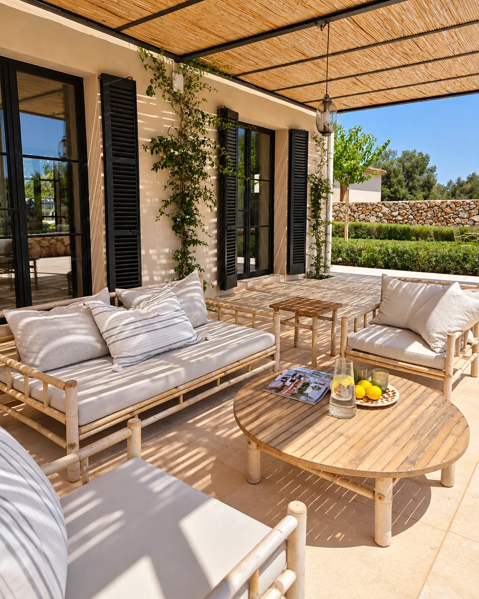
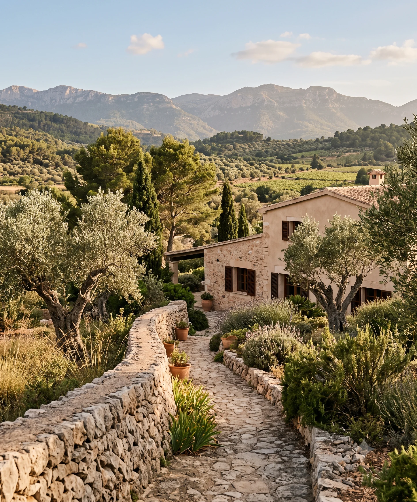

Nuestra historia
Una relación de confianza para cuidar su propiedad en Mallorca
AE Property Management & Consult nació para dar respuesta a propietarios que necesitaban a alguien de confianza en la isla. Hoy ofrecemos una gestión privada y personalizada, basada en la discreción, la transparencia y la atención al detalle.

Cómo nació AE
De una primera relación de confianza a un servicio especializado
AE Property Management & Consult nació hace aproximadamente dos años, cuando unos propietarios que no residían habitualmente en Mallorca pidieron a su fundadora que cuidara y gestionara su vivienda durante sus ausencias.
El servicio comenzó con necesidades esenciales como la limpieza, la jardinería, el mantenimiento de instalaciones y la supervisión general de la propiedad. A partir de esa primera vivienda fue creciendo y especializándose según las necesidades de nuevos clientes.
Hoy integra gestión y supervisión de propiedades, concierge, preparación de viviendas, coordinación de profesionales, supervisión de obras y acompañamiento en operaciones inmobiliarias privadas, manteniendo la misma relación cercana y de confianza del inicio.
Nuestra misión
Tranquilidad
Una presencia local de confianza durante sus ausencias.
Control
Información clara sobre cada necesidad y actuación.
Continuidad
Seguimiento organizado de la propiedad y los trabajos.
Confianza
Una relación directa, discreta y orientada al largo plazo.
Tranquilidad, control y confianza, también desde la distancia
Nuestra misión es que cada propietario pueda dejar su vivienda en nuestras manos con la tranquilidad de saber que está cuidada, supervisada y atendida de acuerdo con sus prioridades.
El verdadero valor del servicio no consiste solo en coordinar tareas. Consiste en aportar seguridad, información y continuidad para que el cliente pueda disfrutar de sus estancias sin preocuparse por la gestión cotidiana.
Nuestros valores
Los principios que guían cada servicio
Nuestro compromiso combina profesionalidad, seguridad, calidad y discreción para construir relaciones de confianza a largo plazo.
Analizamos cada necesidad, seleccionamos al profesional adecuado y hacemos seguimiento de su actuación.
Actuamos como referencia local del propietario cuando no se encuentra en Mallorca, dentro del alcance acordado.
La comunicación es directa y personalizada, sin procesos impersonales ni estructuras masivas.
Trabajamos con un número limitado y seleccionado de propiedades para mantener la calidad de la atención.
El cliente conoce qué se está haciendo, qué profesional interviene y cuáles son los costes asociados.
Cada propiedad recibe una propuesta diferente según su ubicación, sus características y sus necesidades concretas.

Un único interlocutor
Los especialistas adecuados para cada necesidad
Cada propiedad puede requerir especialistas distintos. Por eso no aplicamos una solución estándar ni pretendemos reunir en plantilla todas las profesiones que una vivienda puede necesitar.
Analizamos cada caso, buscamos y comparamos propuestas, coordinamos a empresas y profesionales de confianza y supervisamos la ejecución. Actuamos siempre como representantes de los intereses del propietario, con transparencia sobre nuestra gestión y los costes presentados.
Nuestra forma de trabajar
Una gestión clara, personalizada y sin soluciones estándar
Centralizamos las necesidades de la vivienda y coordinamos a los profesionales necesarios para que el propietario mantenga el control, incluso cuando está lejos de Mallorca.
Analizamos
Conocemos la propiedad, su ubicación, sus características, su uso y las prioridades del propietario.
Seleccionamos
Buscamos al especialista más adecuado y valoramos las soluciones y propuestas disponibles.
Coordinamos
Organizamos accesos, tiempos y trabajos, y supervisamos la ejecución acordada.
Informamos
Mantenemos al propietario al corriente de cada actuación y de los costes asociados.
Evolución del servicio
Una atención que creció con las necesidades de cada propietario
Lo que comenzó con el cuidado esencial de una vivienda se amplió hacia nuevas áreas de gestión. Atendemos a propietarios nacionales e internacionales en español, inglés y alemán.
Gestión y supervisión
Revisiones de la propiedad, mantenimiento, preparación de la vivienda y coordinación de las necesidades habituales.
Concierge y asistencia
Asistencia personalizada y organización de servicios para que cada estancia resulte más sencilla y confortable.
Obras y Real Estate
Supervisión de obras y reformas, y acompañamiento en operaciones inmobiliarias privadas cuando el proyecto lo requiere.
Zona de servicio
Atención selectiva para mantener la calidad del servicio
Trabajamos principalmente en el sur, sureste y suroeste de Mallorca, donde podemos ofrecer una presencia cercana y un seguimiento responsable.
También valoramos propiedades en otras zonas cuando la ubicación, la frecuencia de las visitas y los servicios solicitados permiten mantener el nivel de atención que define nuestro trabajo.
Criterios que valoramos
- Ubicación y distancia hasta la propiedad.
- Frecuencia de las visitas necesarias.
- Características y necesidades de la vivienda.
- Servicios y profesionales que deben coordinarse.
- Capacidad de mantener una atención personal, discreta y de calidad.
Una relación a largo plazo
Cuéntenos cómo podemos ayudarle
Explíquenos dónde se encuentra la propiedad, qué necesidades tiene y qué espera de una relación de confianza en Mallorca.